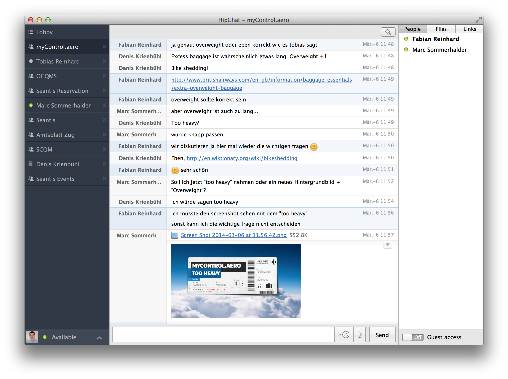

Einfache Zusammenarbeit: alles hat eine URL
Mit den richtigen Werkzeugen ist die Zusammenarbeit produktiver und macht mehr Spass. Für unsere interne Zusammenarbeit setzen wir auf moderne Tools und ein einfaches Prinzip: alles hat eine URL.
LaTeX und Git für Dokumente
Konzepte (Offerten) schreiben wir in LaTeX (www.latex-project.org). Dokumente sind immer in einem Git Repository versioniert und schliessen ein Changelog ein. Damit können einfach mehrere Personen an einem Konzept schreiben. Nie mehr Microsoft Word!
Trac Projektmanagement-Tool
Für (nicht öffentliche) Projekte wird bei Projektstart das webbasierte Projektmanagement Tool «Trac» (http://trac.edgewall.org) aufgesetzt. Darin werden Tickets erfasst und verantwortlichen Personen zugeordnet. Die Projektmanagerin des Kunden hat jederzeit vollen Zugriff auf das Trac des Projektes. Sie erfasst selbst Tickets und kann Themen «code-nah» mit dem Projektteam diskutieren. Auch die Triage von Issues findet für alle Projektmitglieder transparent im Projektmanagement-Tool statt.
Github für Open Source
Unser Quellcode wird mit der Versionsverwaltung-Software «Git» (www.git- scm.com) verwaltet. Für Open Source Projekt ist unser kompletter Code auf der Kollaborationsplattform «GitHub» verfügbar (www.github.com/seantis).
Continous Integration Server
Für die kontinuierliche Integration und für das Ausführen der automatisierten Tests verwenden wir «Jenkins» (www.jenkins-ci.org) bzw. «Travis» (www.travis-ci.org) für Open Source Projekte. Es ist auf einen Blick erkennbar welches Commit zu einem fehlerhaften Build geführt hat.
Chatrooms
Für die direkte, weniger formale Kommunikation setzen wir auf «HipChat» (www.hipchat.com). Der Projektmanager des Kunden kann jederzeit einfach in den Chatroom des Projektes eingeladen werden. In unseren projekt- und themenspezifischen Chatrooms dürfen auch Bots mitreden: unsere Server (mehr als 30 Root Server) haben sogar ihren eigenen Raum «Server Café - where servers come to chat». Ein Bot für Github meldet Issues direkt in den entsprechenden Raum und Applikationen wie z.B. myControl.aero rufen voller Freude in den Chatraum wenn sich ein neuer User angemeldet hat oder ein Abo verkauft wurde.

Alles hat eine URL
Was verbindet alle diese Tools? Ein einfaches Prinzip: alles hat eine URL.
Konzepte, Tickets, Chats haben alle eine eigene URL. Dies stellt sicher, dass der Zugang für alle Berechtigten jederzeit gewährleistest ist, Inhalte durchsuchbar sind über Links einfach miteinander verknüpft werden können.